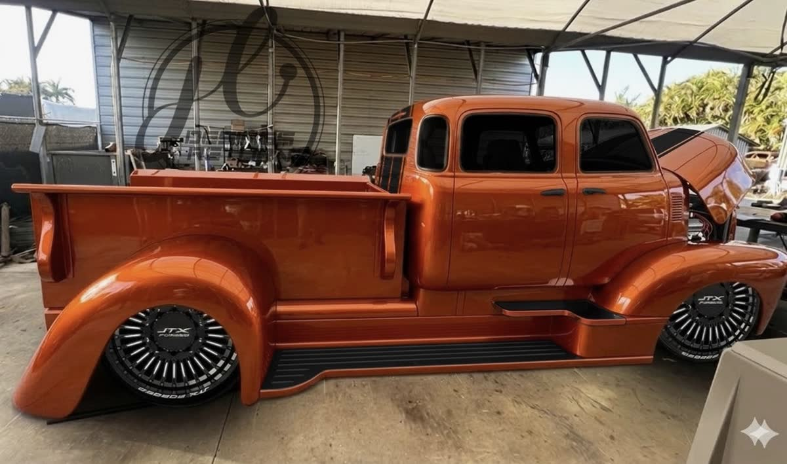
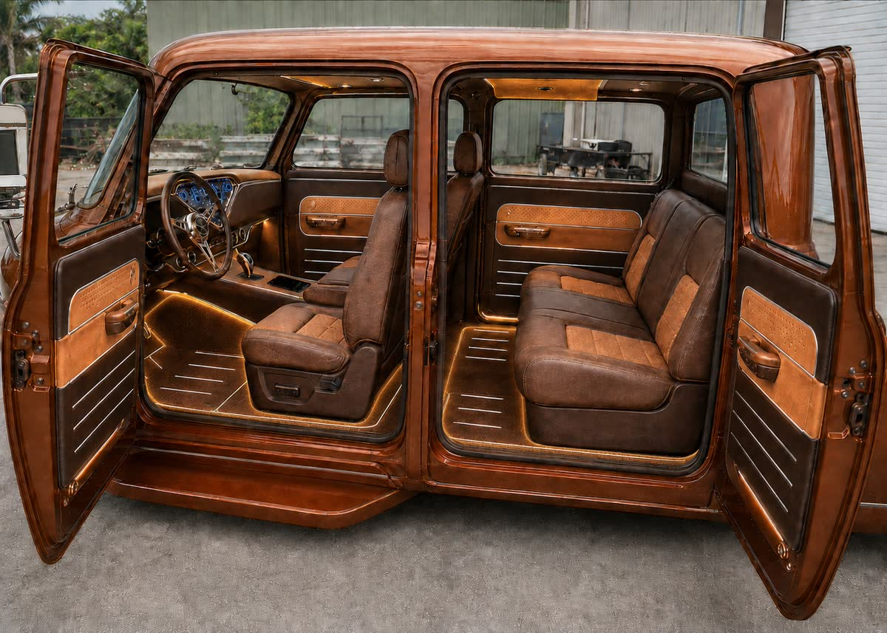

Estudio Godzilla
Propuesta de estudio de video en bodega para producir reels al nivel de RK Motors: ciclorama blanco, piso espejo, una sola luz cenital gigante y cámara lenta sobre el candy cobre.
Versión 1 · 18 sep 2026 · precios verificados esa fecha en fabricante, B&H y Adorama. Los marcados ~ est. no se pudieron confirmar.
Qué hace exactamente el reel de RK Motors
El reel de referencia (GMC 100 de 1959, 136 mil likes) dura 34 segundos, es vertical 1080 × 1920 a 30 fps y son 9 planos. Ningún plano dura más de 5 segundos y la cámara nunca está quieta: siempre hay un slider, un gimbal o la tornamesa girando.

Los cinco ingredientes del look
- Una sola fuente enorme arriba. Una caja de luz de unos 20 × 20 ft colgada sobre el vehículo. Es lo que produce la franja blanca continua en el techo y los reflejos limpios en la pintura. Se deja ver en cuadro a propósito.
- Ciclorama blanco con esquina curva. No hay línea entre pared y piso, así que el fondo desaparece.
- Piso gris pulido tipo espejo. El camión se refleja; con blanco puro el piso "quema" en video, por eso es gris.
- Tornamesa. En el plano general la cámara no se mueve: gira el camión.
- Óptica y control de reflejos. Polarizador circular en todos los planos, banderas negras para pintar el reflejo, y macro para los detalles.
RK Motors no publica nada sobre su estudio. Solo se sabe que tienen un "digital media studio" propio dentro de 60,000 sq ft en Charlotte, con un fotógrafo y un videógrafo de planta. Todo lo anterior sale de analizar el reel cuadro a cuadro.
Cuentas que hacen lo mismo
Seguidores leídos el 18 sep 2026. Para Godzilla el modelo a copiar es RK (look) + Velocity (nicho) + ECD (historia de taller, que ya está en el Libro Maestro).
20 × 20 no alcanza para el COE. Alcanza para el 70 % del reel.
El COE crew cab dually mide unos 23 ft de largo, 8 ft de ancho y 7.5 ft de alto. En 20 × 20 solo cabe en diagonal, sin distancia de cámara. Los planos de detalle sí salen; el plano general con aire alrededor y el softbox en cuadro, no.
Tres formas de resolverlo
A · Bahía de detalle 20 × 20 mínimo
Cyc en una pared, piso epoxi, softbox 12 × 12 sobre la mitad del camión que toque. Sirve para el 70 % de los planos del reel y para todos los reels de proceso. El plano general se hace afuera o en otra parte de la bodega con tela negra.
B · Estudio completo 30 × 45 · techo 16 ft recomendado
Es el look RK al 100 %. La caja de luz cuelga a 12.5 ft, el camión mide 7.5 ft y quedan 5 ft de aire para que la luz "se abra". Las paredes laterales quedan a 11 ft del camión, suficiente para la Light Dome y la ventana 8 × 8 fuera de cuadro.
C · Híbrido
Construir la bahía 20 × 20 ahora (detalle) y reservar los 30 × 45 contiguos sin construir: piso epoxi corrido y 3 rollos de papel Savage de 107" como fondo temporal para el plano general. Cuando se venda Godzilla, se termina el cyc.
Lo que hay que medir esta semana: altura libre real del techo (vigas, luminarias, puertas de rollo), dónde está el tablero eléctrico y si el piso tiene pendiente o juntas de dilatación en la zona del cyc.
Dónde va cada luz
Planta a escala del estudio 30 × 45 ft con el camión en 3/4 sobre la tornamesa. Todo es luz LED continua (video), nada de flash. La regla del Libro Maestro se cumple con la luz 2: el candy tiene que "caminar", así que la Light Dome va en pluma con ruedas y se mueve durante la toma.
Por qué 16 ft de techo
La caja de luz tiene que colgar por encima del camión con aire de sobra, y las lámparas van encima de la caja. Si el techo mide 12 ft, el softbox queda pegado al techo de la cabina y la luz cae dura, con el punto caliente de cada lámpara marcado en la pintura. Con 14 ft se puede trabajar poniendo las lámparas a los lados del marco en vez de arriba. Con 16 ft o más se replica RK.
Ajustes de cámara para el candy
- 4K 60p para bajar a 30 en edición (el reel de RK está a 30 fps). Obturador 1/120.
- S-Cinetone para entregar rápido; S-Log3 solo si el editor va a gradear.
- ISO 800, f/4 a f/5.6. Con 1,200 W arriba sobra luz: el VND baja la exposición.
- Polarizador circular girado plano por plano: quita el reflejo del piso cuando estorba y lo deja en la pintura.
- Balance fijo en 5600 K para exterior y 3200 K para interior. Nunca automático.
Cómo se vería
Las cuatro imágenes son cálculo físico de luz con el plano anterior: caja cenital 20 × 20, Dome 150 en pluma, ventana 8 × 8, floppy negro, tubos de contra, piso epoxi gris y ciclorama con cove. El material del camión es candy metálico con barniz. Sirven para validar el plan de luces, no para presentar el camión.


Qué comprar, en dos niveles
PRO es el nivel RK Motors. SMART da el mismo look en pantalla de celular con la mitad del dinero. Un dato clave: Aputure descontinuó el LS 1200d Pro y el 600d Pro en 2025; sus reemplazos son STORM 1200x y STORM 400x, y el LS 600c Pro II está en liquidación a 40 % menos.
Resumen
| Escenario | Equipo (luz + grip + cámara) | Infraestructura | Total USD |
|---|---|---|---|
| SMART + bahía 20 × 20 | 18,901 | 7,740–10,440 | 26,600–29,300 |
| SMART + estudio 30 × 45 | 18,901 | 28,158–45,208 | 47,100–64,100 |
| PRO + estudio 30 × 45 | 40,359 | 28,158–45,208 | 68,500–85,600 |
| Tornamesa (cualquier escenario B, fase 2) | 8,000–25,000 | +8,000–25,000 |
Luces
| Función | PRO | USD | SMART | USD |
|---|---|---|---|---|
| 1 · Cenital (2 lámparas) | Aputure STORM 1200x × 2 | 5,980 | Aputure LS 600c Pro II × 2 (oferta) | 2,980 |
| 2 · Luz de pintura | LS 600c Pro II + Light Dome 150 | 1,759 | Amaran 300c + Light Dome 150 | 724 |
| 3 · Ventana 8 × 8 | Amaran 300c | 455 | Amaran 300c | 455 |
| 5 · Interior | Lantern 90 + Amaran F22c + MC Pro kit 8 | 2,937 | Lantern 90 + Amaran F21c + MC kit 4 | 1,237 |
| 6 · Contras | Nanlite PavoTube II 30XR kit 4 | 1,759 | Nanlite PavoTube II 30C kit 4 ~ | 720 |
| 7 · Lavado cyc (opcional) | Amaran Halo 200x × 2 | 498 | se usa el cenital | 0 |
| Total luces | 13,388 | 6,116 |
Modificadores y grip
| Ítem | PRO | USD | SMART | USD |
|---|---|---|---|---|
| Marco cenital | Matthews Snap-A-Part 12 × 12 × 2 (forma 24 × 12) + grid cloth 12 × 12 × 2 ~ | 3,576 | Snap-A-Part 12 × 12 × 1 + grid cloth ~ | 1,788 |
| Ventana lateral | Kupo 8 × 8 frame kit + grid cloth 8 × 8 ~ | 1,035 | Westcott Scrim Jim Cine 8 × 8 kit (marco + telas) | 750 |
| Banderas negras | Matthews floppy 4 × 4 × 2 | 582 | Floppy genérico + trapo × 2 ~ | 394 |
| Tela negra 20 × 20 | Canvas Grip duvetyne FR | 495 | igual | 495 |
| Stands | Matthews C-stand 40" × 4 + Hollywood Combo triple × 2 | 2,222 | Impact Turtle C-stand × 4 + Autopole/Sky Hook | 897 |
| Pluma para la Dome | Avenger D650 Junior Boom + Menace arm ~ | 609 | Avenger D650 ~ | 310 |
| Colgado del cenital | 4 puntos con polea y cadena, tubo de 1.25" ~ | 600 | igual ~ | 600 |
| Total grip | 9,119 | 5,234 |
Cámara, óptica y movimiento
| Ítem | PRO | USD | SMART | USD |
|---|---|---|---|---|
| Cuerpo | Sony FX3A. Es la cámara de este tipo de reel: vertical nativo, sin límite de grabación, ventilador, S-Log3. | 4,298 | Sony a7 IV. 4K 60 con recorte, 10 bits, mismo color. | 1,998 |
| Zoom principal | Sony 24-70 GM II ~ | 2,398 | Sigma 24-70 DG DN II Art | 1,319 |
| Gran angular (plano general) | Sony 16-35 GM II ~ | 2,650 | se usa el 24 mm del zoom | 0 |
| Macro (pintura, emblemas, rines) | Sony 90 mm f/2.8 Macro G | 1,098 | Sony 90 mm f/2.8 Macro G | 1,098 |
| Polarizador 82 mm | PolarPro QuartzLine CP ~ | 249 | B+W XS-Pro Kaesemann ~ | 150 |
| ND variable 82 mm | PolarPro VND 2-5 | 250 | PolarPro VND 2-5 | 250 |
| Gimbal | DJI RS 4 Pro Combo + Focus Pro Creator (foco LiDAR) | 2,098 | DJI RS 4 Pro | 869 |
| Slider motorizado | Edelkrone SliderPLUS v6 | 668 | Zeapon Micro3 M700 (manual) | 419 |
| Trípode fluido | Sachtler 75/2 aluminio + Ace XL | 946 | Benro S8 Pro + patas ~ | 450 |
| Monitor | SmallHD Ultra 5 | 2,249 | Atomos Shinobi II | 349 |
| Audio (arranque Cummins, air ride, puertas) | Zoom F3 + Sennheiser MKE 600 + Rode Wireless PRO | 948 | Zoom F3 + MKE 600 | 649 |
| Total cámara | 17,852 | 7,551 |
Infraestructura del estudio
| Ítem | Opción B · 30 × 45 ft | USD | Opción A · 20 × 20 ft | USD |
|---|---|---|---|---|
| Piso epoxi 100 % sólidos, gris medio, alto brillo | 1,350 sq ft × $9–12 (Tampa 2026) | 12,150–16,200 | 400 sq ft × $9–12 | 3,600–4,800 |
| Ciclorama drywall con cove de 3 ft | Pared 45 ft + 2 esquinas, contratista ~ | 12,000–25,000 | Pared 20 ft + 1 esquina ~ | 2,500–4,000 |
| Pintura de cyc | Pro Cyc Cyclorama White 5 gal × 2 | 958 | Sherwin-Williams ProMar 200 flat 5 gal | 240 |
| Electricidad | 6 circuitos 20 A + 1 de 240 V 30 A ~ | 2,250 | 4 circuitos 20 A ~ | 1,000 |
| Oscurecimiento | Tapar tragaluces y puertas, telas negras | 800 | igual | 400 |
| Tornamesa (fase 2) | Carousel USA 18 ft instalada, o importada 5 t / 5 m + instalación ~ | 8,000–25,000 | no cabe | 0 |
| Total infraestructura (sin tornamesa) | 28,158–45,208 | 7,740–10,440 |
Dónde está el look si hay que recortar. LS 600c Pro II a través del marco 12 × 12 con grid cloth, polarizador en el lente, piso epoxi gris y un floppy negro. Eso son unos $3,500 en luz y grip y es el 80 % de RK Motors. La FX3A, el monitor SmallHD y la tornamesa son el último 20 %.
Circuitos antes que lámparas
Consumo real
STORM 1200x: 1,550 W, 12.9 A a 120 V. LS 600c Pro II: 720 W, 6 A. Amaran 300c: 350 W. Cuatro tubos: 300 W. Un cenital PRO con dos 1200x son 3,100 W.
Regla
Un circuito de 20 A dedicado por cada lámpara de 1,200 W. Dos 600c caben en un solo 20 A. Todos los accesorios (tubos, mats, minis) en otro. Nunca compartir con el compresor del taller ni con el aire acondicionado.
Baterías y generador
Una EcoFlow Delta Pro ($1,899) corre un 1200x unas 2 horas: sirve de respaldo y para el día de calle, no como fuente diaria. Generador dentro de la bodega, no: monóxido y ruido en el audio del motor.
Tomas cada 10 ft en las cuatro paredes y dos en el techo junto a los puntos de colgado del cenital. Un electricista en Florida cobra unos $250–500 por circuito ~.
El mismo esqueleto de 34 s, con lo que solo Godzilla tiene
| Seg. | Plano | Cómo |
|---|---|---|
| 0–3 | Rin GTX negro dually a ras de piso | Slider lateral, 45 mm, Dome cruzando el guardafango 1946 |
| 3–7 | Cummins 5.9 con el hood abierto | Macro 90, gimbal lento, tubo cálido dentro del vano |
| 7–11 | El candy "camina" sobre la puerta | Cámara fija, la Dome se desplaza 6 ft en pluma |
| 11–15 | Puertas suicide abriéndose en sentido opuesto | Gimbal entrando, Lantern al 5 %, LED del camión dominando |
| 15–19 | Dash flecha, cinco relojes azules, iPad en la cubierta | 35 mm, 3200 K |
| 19–24 | Cama: tanques, compresores, manifold bajo la tapa | Pluma o gimbal cenital, air ride subiendo con sonido limpio |
| 24–31 | Plano general girando | Cámara fija a 3 ft, 20 mm, tornamesa (o gimbal en órbita) |
| 31–34 | Frente COE + "Built twice" | Cámara fija, corte a negro |
Entregar siempre el corte principal, la versión sin música y el master con subtítulos, como pide el capítulo 13. Música: referencia Run-D.M.C. solo desde la biblioteca de Instagram; para ads y YouTube hace falta licencia.


Ruta para tener el estudio antes de la semana 8 del Libro Maestro
- Medir y decidir el espacio (esta semana)Altura libre real, tablero eléctrico, puertas, tragaluces. Decidir A, B o C con el dueño. Si es 20 × 20, aceptar por escrito que el plano general se hace fuera de la bahía.
- Piso y ciclorama (semanas 1–4)Primero el cove en drywall, después el epoxi para que quede corrido bajo la curva. El epoxi necesita 5–7 días de curado antes de meter un camión de 3 toneladas.
- Electricidad y colgado (semana 3)Circuitos dedicados, tomas en techo, cuatro puntos de anclaje con polea para el marco cenital. Tapar toda luz de día.
- Compra de luz y grip (semana 4)Aprovechar la liquidación del LS 600c Pro II mientras dure. Marcos, grid cloth, floppies, C-stands. Lo demás puede esperar.
- Cámara y prueba con otro vehículo (semana 5)Rodar un reel completo con cualquier carro del taller siguiendo el guion de 34 s. Afinar altura del cenital, posición de la Dome y polarizador. Publicarlo: es contenido igual.
- Sesión Godzilla · Día 1 showroom (semana 8)Fondo, 360°, ruedas, motor, cama, puertas, dash, air ride subiendo y bajando con audio limpio. Día 2 calle con los rolling shots.
Fuentes de precios: aputure.com, amarancreators.com, nanliteus.com, msegrip.com, kupogrip.com, store.dji.com, edelkrone.com, smallhd.com, fjwestcott.com, canvasgrip.com, us.ecoflow.com y fichas de B&H, Adorama y Sweetwater con fecha 2026. Costos de piso y cyc: Tampa Epoxy Floors 2026, Circular Studios, AST Cyc, Archways & Ceilings. Dimensiones de referencia: Photo-Motion (estudio para trucks 33 × 26 × 15 ft), Studio C2 (tornamesa 20 ft, techo 24 ft). Análisis del reel: instagram.com/reel/DXueW7-DQWY. Este documento acompaña al Libro Maestro Godzilla v1.0 del 22 de agosto de 2026.